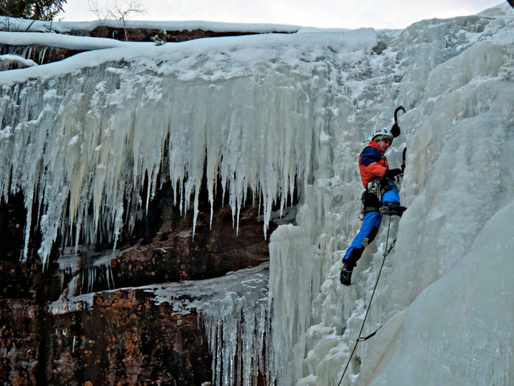

Ice Climbing
Rjukan is one of the world's premier ice climbing destinations, drawing climbers from around the globe.

Nestled in Norway's wild heart, Rjukan is a paradise for climbers, hikers, and adrenaline seekers.
Conquer frozen waterfalls, trek breathtaking trails, or experience Norway's most thrilling bungee jumps.
Explore the best adventure experiences that Rjukan has to offer.
Rjukan is one of the world's premier ice climbing destinations, drawing climbers from around the globe.
Carve through pristine slopes at Gausta Skisenter, offering breathtaking mountain views and top-notch snow conditions.
Embark on an unforgettable journey to the summit of Gaustatoppen and witness panoramic views across Norway.
Take the ultimate leap at one of Norway's highest bungee jumping spots for an adrenaline-pumping experience.
Discover our adventure lodges and the unique experiences they offer.
At Heavy Water Adventures, we provide an unforgettable experience for adventure seekers. Our two lodges, Heavy Water Lodge and Adventure Base, offer modern accommodations with direct access to Norway's stunning wilderness.
Whether you're into ice climbing, skiing, hiking, or just looking to unwind in nature, our lodges are fully equipped to meet your needs. Enjoy spacious rooms, a fully stocked kitchen, a private sauna, and more.
Located near world-famous outdoor adventure spots, Heavy Water Adventures is the perfect base for your next thrilling journey.

From ice climbing to bungee jumping, Peti has done it all.
Peti is a seasoned adventurer with years of experience in extreme outdoor sports. As a professional ice climber, he has tackled some of Norway's toughest frozen walls.
Before founding Heavy Water Adventures, he organized thrilling kayak expeditions, guiding explorers through Norway's breathtaking fjords and whitewater rapids.
As an experienced bungee jumping assistant, Peti has helped countless adrenaline seekers take the leap at Norway's most iconic jump sites—ensuring both safety and excitement.